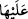

doğrudur. Çünkü gemi, içinde bulunan için bir kaptır ve üzerinde olanı da taşır. Bu iki
mânâ da doğru olduğuna göre iki ibâre de doğrudur. Yine “ ifâdesi, “
ifâdesiyle uyum içerisinde olmakta ve ona eş olmaktadır. Bahru’l-ulûm’da böyle
geçmektedir.
Suda yüzmek Hz. Peygamber (s.a.)’in sünnetlerindendir.
İnsânü’l-uyûn’da der ki: “Peygamberimiz (a.s.)’ın babası Abdullah’ın vefâtı
Medine’de olmuş ve Tâbia/Nâbiğa’nın evinde defnedilmişti. Kendisi Peygamberimiz
(a.s.)’ın babasının dayıları olan Adiy b. Neccâr oğullarındandı. “Neccâr” Temîm’in
adıdır. Rasûlullah (a.s.) Medîne’ye hicret ettiğinde o evi görünce tanıdı. “İşte Annem
beni buraya misafir getirmişti. Babam Abdullah’ın kabri bu evdedir. O zaman Adiy b.
Neccâr oğulları kuyusunda yüzmeyi güzelce öğrenmiştim.” buyurdu.
İkrime’nin İbn Abbas (r.anhümâ)’dan naklettiğine göre Nebî (a.s.) ve ashâbı,
Cuhfe’deki küçük gölde yüzerlerdi. Hz. Peygamber (a.s.) ashabına: “Her biriniz
arkadaşına doğru yüzsün.” buyurdu. Geriye Hz. Peygamber (a.s.) ve Hz. Ebû Bekir
(r.a.) kaldı. Efendimiz (s.a.), Hz. Ebû Bekir (r.a.)’ın yanına varıp onunla kucaklaşana
kadar yüzdü ve şöyle buyurdu “İşte ben ve arkadaşım. İşte ben ve arkadaşım.” Başka
bir rivâyete göre ise: “Ben arkadaşıma âidim, ben arkadaşıma âidim.” buyurdu.[77]
İşte bu rivâyetlerden: “Hz. Peygamber (a.s.) gerçekten hiç yüzdü mü?” diye
sorulduğunda: “Hayır, çünkü Hz. Peygamber (a.s.)’ın denizde seyahat ettiği sâbit
değildir. Haremeyn’de de deniz yoktur.” diyen kimsenin sözünün reddedileceği
anlaşılır.
[72]. Bk. Müslim, Cennet, 26
[73]. Gazzali, İhya, III, 91.
[74]. Münâvî, IV, 347
[75]. Münâvî, IV, 348
[76]. bk. Buhârî, Edâhî, 3, 10; Müslim, Hac, 119; Nesâî, Tahâret, 182; İbn Mâce,
Menâsik, 36
[77]. Heysemî, Mecmau’z-zevâid, IX, 25; Taberânî, el-Kebîr, XI, 261